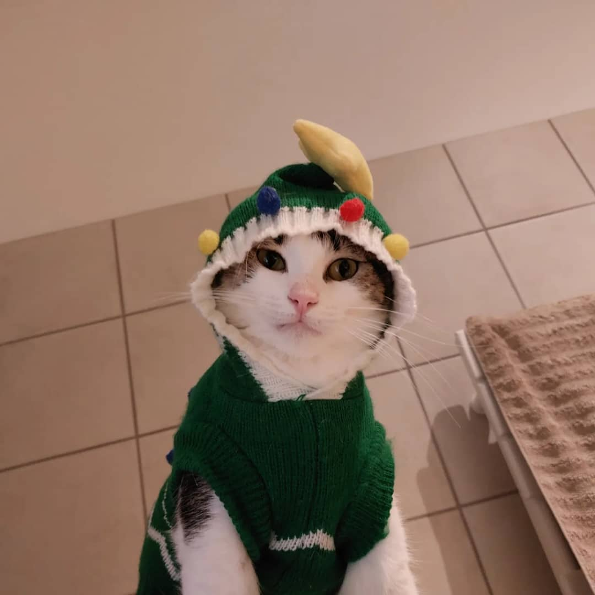

Not Long Time Ago
A Tale of Serendipity
In the winding alleys of Morocco, where the sun's rays seemed to dance with the dust, a peculiar melody beckoned me. Following the enchanting sound, I stumbled upon a tiny feline, her fur ablaze with the hues of a Saharan sunset. "Lost, are we?" I quipped, to which she responded with a plaintive meow that seemed to echo through the labyrinthine streets.
"Perhaps we're both seeking something," I mused aloud, as if the very air carried our conversation. With a flick of her tail, she sauntered closer, her amber eyes gleaming with an ancient wisdom. "A guide, you say?" she seemed to purr, her voice a soft melody amidst the cacophony of the souk.
And so, amidst the chaos of a world in flux, our companionship bloomed. "Shall we explore, Sunny?" I'd inquire, to which she'd respond with an affirmative meow, leading the way with an elegance that belied her diminutive stature. Together, we traversed the labyrinth of Marrakech, our conversations woven with laughter and whispered secrets, our bond unspoken yet palpable in the air. Through her playful antics and unwavering companionship, Sunny transformed the mundane into the extraordinary, each step a testament to the magic of unexpected encounters in the most unlikely of places.
Cat Passport
- Cat Name: Sunny
- Date of Birth: 2021-08-30
- Nationality: Chinese
- Race: European Short-Hair
- Vaccine: Fully Vaccinated
Personality
- Active: She's always on the move, getting everything off the table.
- Smart: She definitely knows when to ask for more treats.
- Thin: Due to a very athletic trait, she looks pretty and pretty slim.
- Talkative: She communicates with you whenever she needs attention.
Sister Relationship
Sunny has 3 other siblings, "Naughty", "Dollar" and "Lucky". "Lucky" is the usual companion, as the other two are in China.
Let's see how these two interact with each other.
More about "Sunny"
For more information, visit our Instagram.
For the story between "Sunny" and I, visit Not Long Time Ago.